Knee corrective 在参考辅助骨算子下生成，原 M 的肌肉缩放又对这份修形位移进行变换，造成局部二次拉伸。现在保留 M 基础肌群形变和 Jiggle，只补偿 Knee corrective 的方向变换差，并在原生 Optimus 图中叠加、重建法线。接触 animated target 使用相同规则。
P = B_M(P0 + Δknee + Δother) + (B_ref − B_M)Δknee
CPU 计算方向差，GPU 应用最终位移；不是新增 GPU 物理求解器。Contact 关闭仍生效。保留原始分层、补偿后分层和真实 GPU 回读。
范围限制：这修复 M 与膝部修形的组合错误，不等于所有区域已经精确还原 VaM。VaM 的表面平滑与隐藏 Morph 输入差异仍分别记录；没有通过统一降低 M 振幅或关闭 Jiggle 掩盖。
视频：左为原 M，右为本次 M。相同相机、灯光、实际骨骼姿态；Jiggle 开启，Contact 关闭。155° 属诊断深屈曲输入，生产关节限位未改。
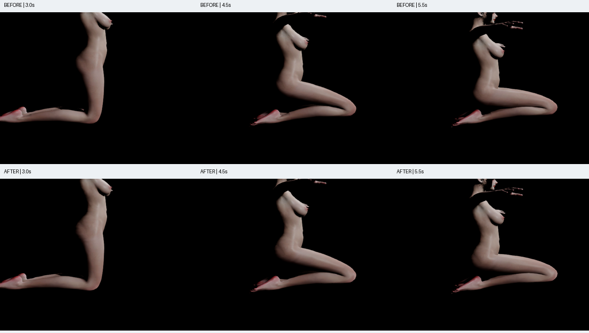
膝部局部放大：左原 M，右本次。仅裁剪缩放。
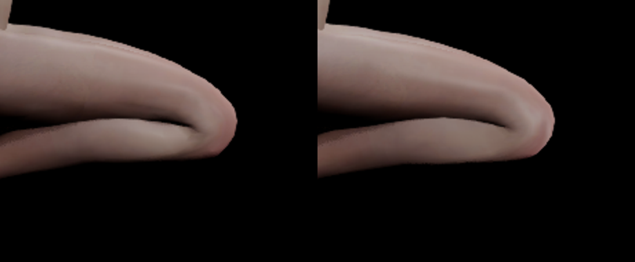
| 三角形对 | 修复前夹角 | 修复后夹角 |
|---|---|---|
| [901, 903] | 48.74° | 5.05° |
| [50, 51] | 84.37° | 72.02° |
| [35, 37] | 45.85° | 23.79° |
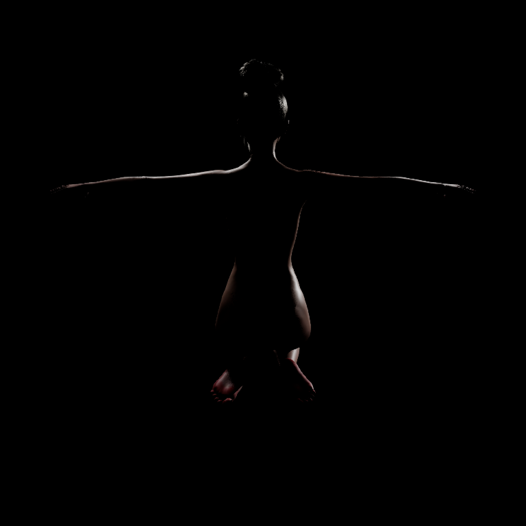
实际 VaM smoothedVertsBuffer 灰模捕获；材质/渲染器不同，不用亮度差代替几何误差。对应源顶点的数值对照见 JSON。
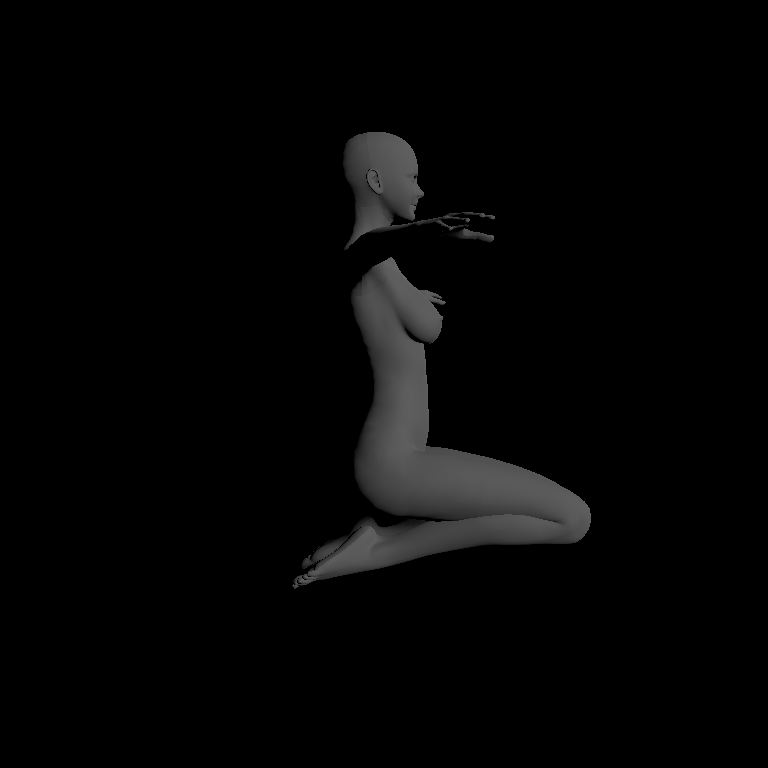
视频：左为原 M，右为本次 M。相同相机、灯光、实际骨骼姿态；Jiggle 开启，Contact 关闭。155° 属诊断深屈曲输入，生产关节限位未改。
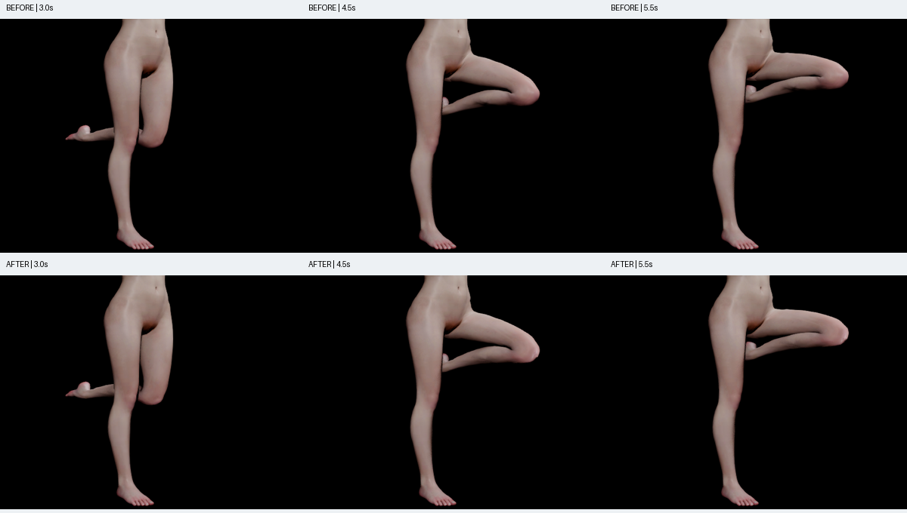
膝部局部放大：左原 M，右本次。仅裁剪缩放。
| 三角形对 | 修复前夹角 | 修复后夹角 |
|---|---|---|
| [901, 903] | 48.79° | 5.06° |
| [50, 51] | 84.35° | 71.96° |
| [35, 37] | 45.83° | 23.76° |
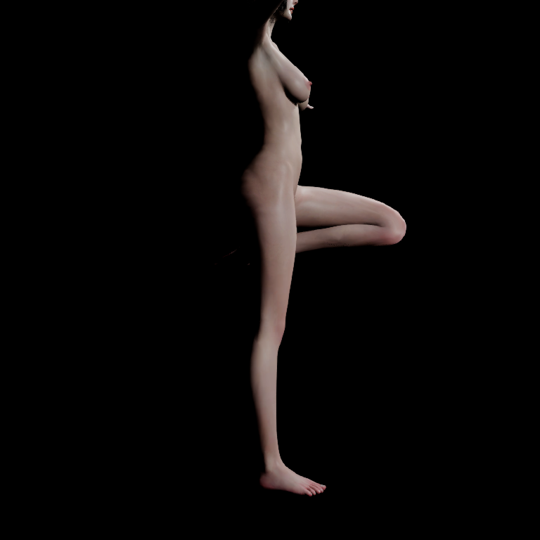
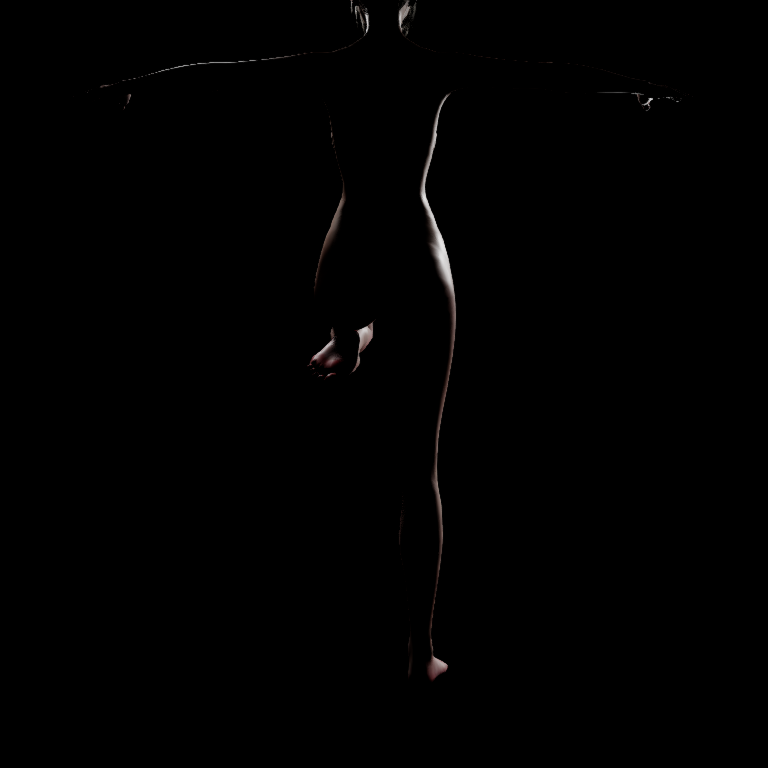
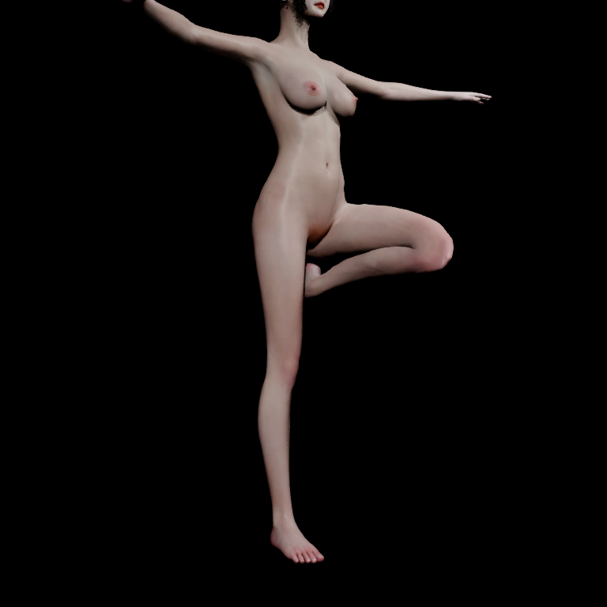
实际 VaM smoothedVertsBuffer 灰模捕获；材质/渲染器不同，不用亮度差代替几何误差。对应源顶点的数值对照见 JSON。
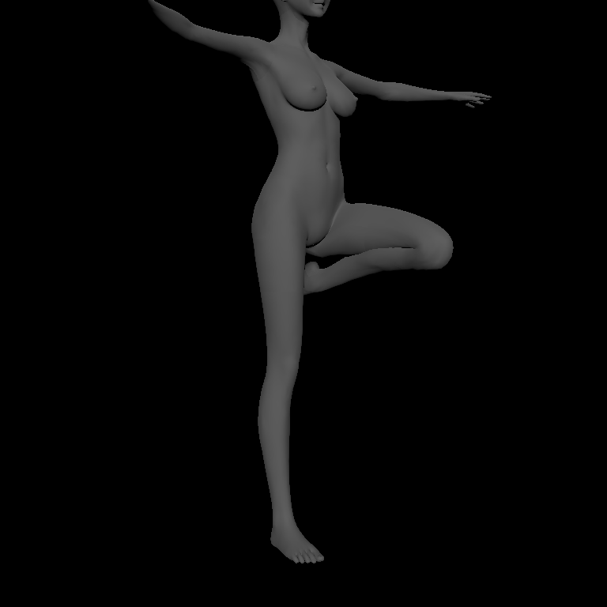
M 与 Knee corrective 的算子一致性修复：PASS。真实普通 BP 的 PIE 和 Editor 重放通过，最终视觉验收仍由用户判断。
47a819cbfcc538a4a9029cd0f2b88a6772c6569f82bde6b5a81fc1bd7db220c2。| 区域 | 原 M RMS / cm | 本次 RMS / cm | 本次 P95 / cm | 本次 Max / cm |
|---|---|---|---|---|
| 左膝前 | 0.4213 | 0.3910 | 0.7522 | 1.0454 |
| 左膝后 | 0.6095 | 0.4893 | 0.9199 | 1.1253 |
| 右膝前 | 0.4218 | 0.3915 | 0.7560 | 1.0478 |
| 右膝后 | 0.6178 | 0.4997 | 0.9172 | 1.1361 |
使用保留的 source ID 映射；相机一致、实际主骨矩阵一致、Bind/权重/Pre-skin 输入一致。臀腿区域另有已记录的源隐藏 Morph 输入差异，不混入本次膝部结论。
/Game/VamMKneeOperator/Runtime/R_47a819cbfcc538a4a9029cd0/RC_Runtime /Game/VamMKneeOperator/Runtime/R_47a819cbfcc538a4a9029cd0/BP_VamCharacter.BP_VamCharacter
请使用该新身份 BP；旧 baked mesh / Deformer 不代表本次修复。资产构建后仅变更了两个诊断文件，生产形变、Bind、权重、Morph 和 Shader 的 186 项指纹核对记录见 身份说明；验证运行有独立身份。
代码已推送：a341556（修形传输）、91934ff（审计同步）。验收摘要 · Editor 数值 · World 分层对照 · Contact 10° · Contact 90° 限制 · 《绝区零》研究图解 · 原 VaM 同动作审计
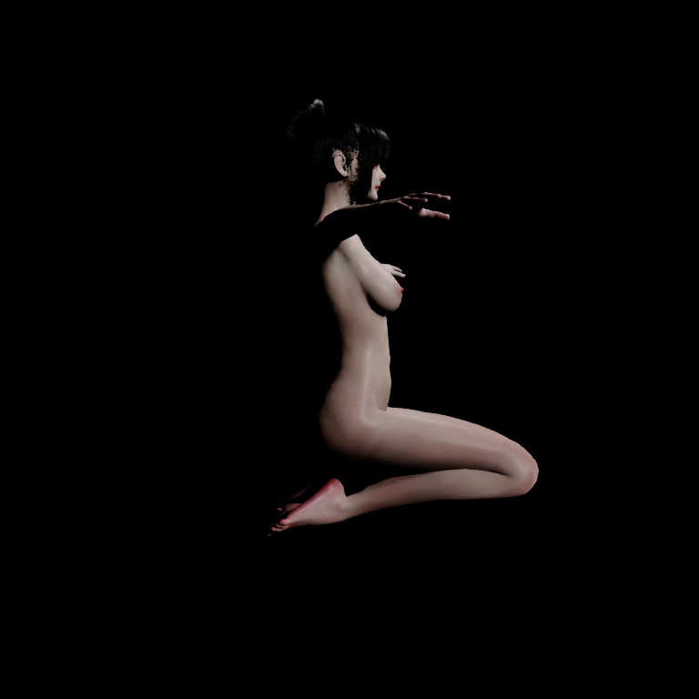
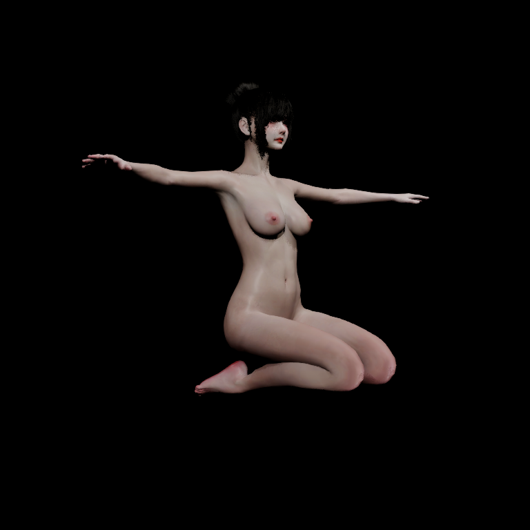